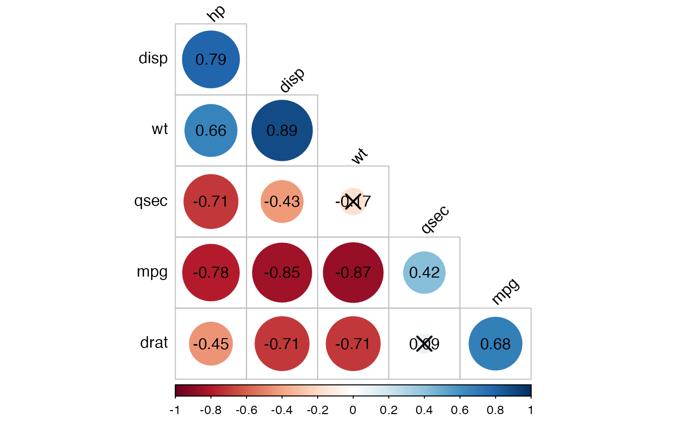

cor_mat.RdCompute correlation matrix with p-values. Numeric columns in the data are detected and automatically selected for the analysis. You can also specify variables of interest to be used in the correlation analysis.
cor_mat(data, ..., vars = NULL, method = "pearson", alternative = "two.sided", conf.level = 0.95) cor_pmat(data, ..., vars = NULL, method = "pearson", alternative = "two.sided", conf.level = 0.95) cor_get_pval(x)
| data | a data.frame containing the variables. |
|---|---|
| ... | One or more unquoted expressions (or variable names) separated by commas. Used to select a variable of interest. |
| vars | a character vector containing the variable names of interest. |
| method | a character string indicating which correlation
coefficient is to be used for the test. One of |
| alternative | indicates the alternative hypothesis and must be
one of |
| conf.level | confidence level for the returned confidence interval. Currently only used for the Pearson product moment correlation coefficient if there are at least 4 complete pairs of observations. |
| x | an object of class |
a data frame
cor_mat: compute correlation matrix with p-values. Returns a data
frame containing the matrix of the correlation coefficients. The output has
an attribute named "pvalue", which contains the matrix of the correlation
test p-values.
cor_pmat: compute the correlation matrix but returns only the p-values of the tests.
cor_get_pval: extract a correlation matrix p-values from an object of
class cor_mat().
cor_test(), cor_reorder(),
cor_gather(), cor_select(),
cor_as_symbols(), pull_triangle(),
replace_triangle()
# Data preparation #::::::::::::::::::::::::::::::::::::::::::: mydata <- mtcars %>% select(mpg, disp, hp, drat, wt, qsec) head(mydata, 3)#> mpg disp hp drat wt qsec #> Mazda RX4 21.0 160 110 3.90 2.620 16.46 #> Mazda RX4 Wag 21.0 160 110 3.90 2.875 17.02 #> Datsun 710 22.8 108 93 3.85 2.320 18.61# Compute correlation matrix #:::::::::::::::::::::::::::::::::::::::::: # Correlation matrix between all variables cor.mat <- mydata %>% cor_mat() cor.mat#> # A tibble: 6 x 7 #> rowname mpg disp hp drat wt qsec #> * <chr> <dbl> <dbl> <dbl> <dbl> <dbl> <dbl> #> 1 mpg 1 -0.85 -0.78 0.68 -0.87 0.42 #> 2 disp -0.85 1 0.79 -0.71 0.89 -0.43 #> 3 hp -0.78 0.79 1 -0.45 0.66 -0.71 #> 4 drat 0.68 -0.71 -0.45 1 -0.71 0.091 #> 5 wt -0.87 0.89 0.66 -0.71 1 -0.17 #> 6 qsec 0.42 -0.43 -0.71 0.091 -0.17 1# Specify some variables of interest mydata %>% cor_mat(mpg, hp, wt)#> # A tibble: 3 x 4 #> rowname mpg hp wt #> * <chr> <dbl> <dbl> <dbl> #> 1 mpg 1 -0.78 -0.87 #> 2 hp -0.78 1 0.66 #> 3 wt -0.87 0.66 1# Or remove some variables in the data # before the analysis mydata %>% cor_mat(-mpg, -hp)#> # A tibble: 4 x 5 #> rowname disp drat wt qsec #> * <chr> <dbl> <dbl> <dbl> <dbl> #> 1 disp 1 -0.71 0.89 -0.43 #> 2 drat -0.71 1 -0.71 0.091 #> 3 wt 0.89 -0.71 1 -0.17 #> 4 qsec -0.43 0.091 -0.17 1# Significance levels #:::::::::::::::::::::::::::::::::::::::::: cor.mat %>% cor_get_pval()#> # A tibble: 6 x 7 #> rowname mpg disp hp drat wt qsec #> * <chr> <dbl> <dbl> <dbl> <dbl> <dbl> <dbl> #> 1 mpg 0. 9.38e-10 0.000000179 0.0000178 1.29e- 10 0.0171 #> 2 disp 9.38e-10 0. 0.0000000714 0.00000528 1.22e- 11 0.0131 #> 3 hp 1.79e- 7 7.14e- 8 0 0.00999 4.15e- 5 0.00000577 #> 4 drat 1.78e- 5 5.28e- 6 0.00999 0 4.78e- 6 0.62 #> 5 wt 1.29e-10 1.22e-11 0.0000415 0.00000478 2.27e-236 0.339 #> 6 qsec 1.71e- 2 1.31e- 2 0.00000577 0.62 3.39e- 1 0# Visualize #:::::::::::::::::::::::::::::::::::::::::: # Insignificant correlations are marked by crosses cor.mat %>% cor_reorder() %>% pull_lower_triangle() %>% cor_plot(label = TRUE)# Gather/collapse correlation matrix into long format #:::::::::::::::::::::::::::::::::::::::::: cor.mat %>% cor_gather()#> # A tibble: 36 x 4 #> var1 var2 cor p #> <chr> <chr> <dbl> <dbl> #> 1 mpg mpg 1 0. #> 2 disp mpg -0.85 9.38e-10 #> 3 hp mpg -0.78 1.79e- 7 #> 4 drat mpg 0.68 1.78e- 5 #> 5 wt mpg -0.87 1.29e-10 #> 6 qsec mpg 0.42 1.71e- 2 #> 7 mpg disp -0.85 9.38e-10 #> 8 disp disp 1 0. #> 9 hp disp 0.79 7.14e- 8 #> 10 drat disp -0.71 5.28e- 6 #> # … with 26 more rows